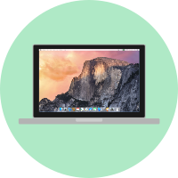

About
Hola, me llamo Francisco. Padre a tiempo parcial. Soy un aficionado de la programación web y los videojuegos. Tengo algunos conocimientos de HTML y CSS, además de hacer mis pinitos con PHP y jQuery. Estoy haciendo esta página web para practicar y aprender.
Esta web la he creado en un Macbook Pro de 13'' de 2009 con OS X El Capitan. Utilizando Sublime Text para escribir el código, iTerm para distintas tareas como navegar por los directorios y ForkLift para subir los ficheros al servidor. Para dibujar las imágenes uso Sketch, Pixelmator y Inkscape en un PC con Windows 10.